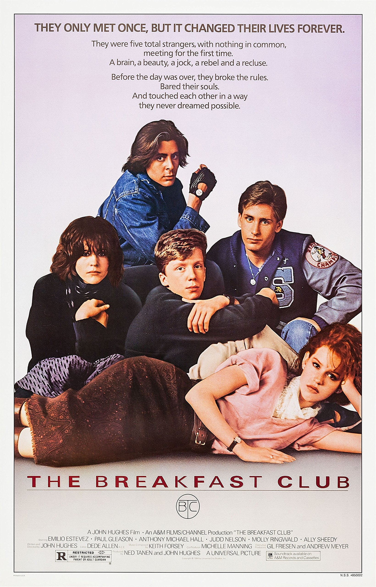
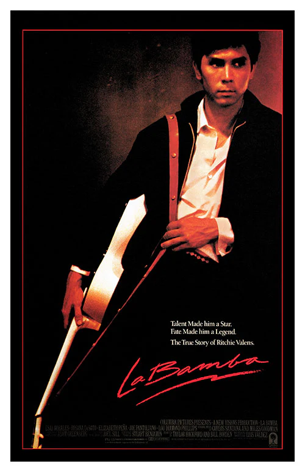

I like Rebel Without a Cause because it explores themes of identity, belonging, and the challenges of growing up. James Dean's performance makes the characters feel authentic and relatable, while the film's emotional story and memorable visuals keep it engaging. I also appreciate how the movie addresses family relationships and the desire to be understood, making its message just as meaningful today as when it was first released.
Key Details
Genre: Coming-Of-Age / Melodrama
Main Cast:
James Dean
Natalie Wood
Sal Mineo
Watch the Trailer
2. The Breakfast Club

Why I Like It
I like The Breakfast Club because it shows how people from different backgrounds can have more in common than they realize. The movie explores themes of identity, friendship, and the pressure teenagers face to fit into certain roles. I enjoy how the characters start as stereotypes but gradually open up and reveal their personal struggles. Its honest portrayal of high school life and the importance of understanding others makes it a timeless and meaningful film. I like how the movie makes me sit and think for a while after watching it.
Key Details
Genre: Coming-Of-Age / Teen Comedy
Main Cast:
Molly Ringwald
Judd Nelson
Anthony Michael Hall
Ally Sheedy
Emilio Estevez
Watch the Trailer
3. La Bamba

Why I Like It
I like La Bamba because it tells the inspiring story of Ritchie Valens and his journey from a young musician to a rock and roll pioneer. I enjoy the film’s connection to music, family, and the challenges of following your dreams. The movie captures the excitement of the early days of rock and roll while showing the personal struggles behind Ritchie’s success. Its great music, emotional story, and cultural significance make it a memorable and meaningful film.